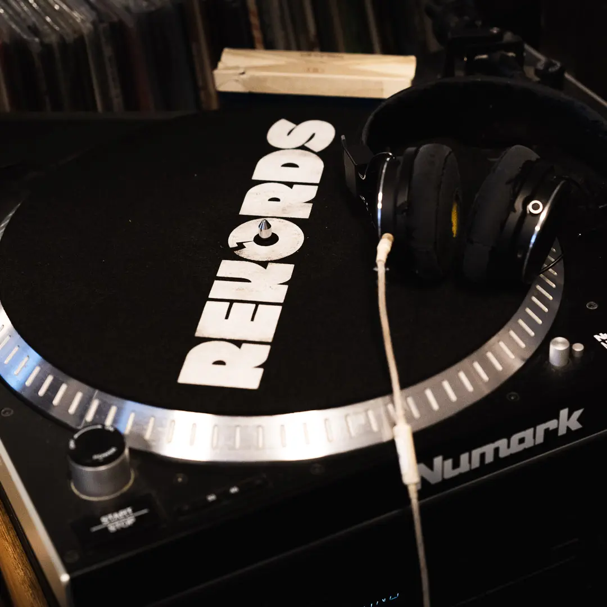
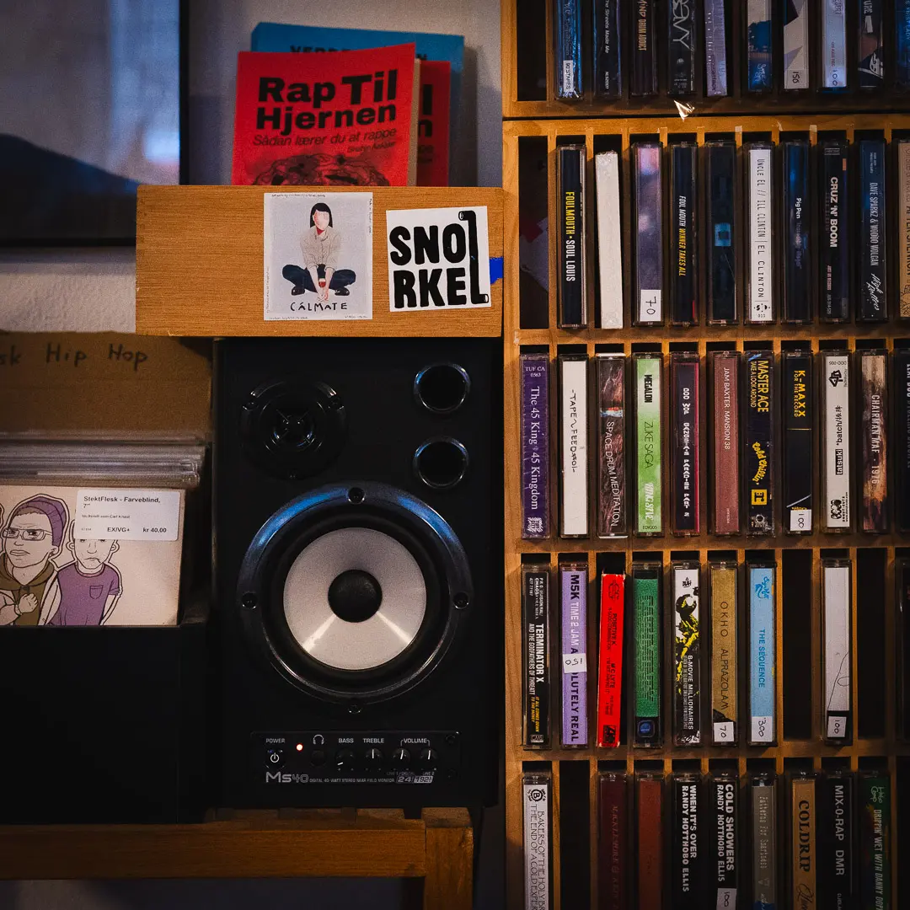
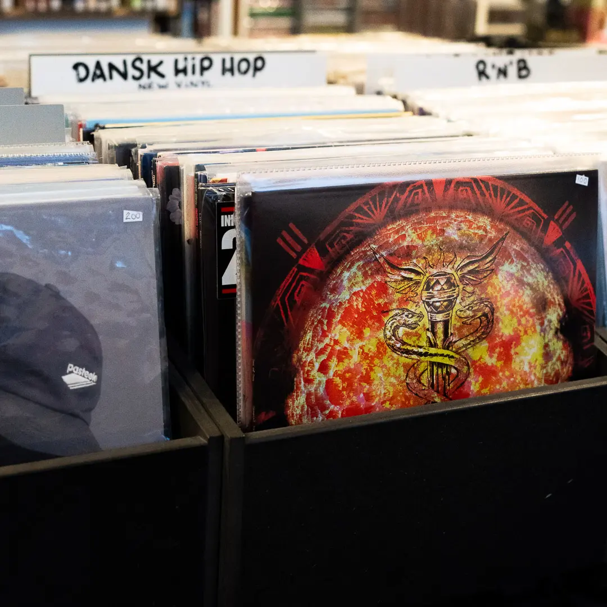
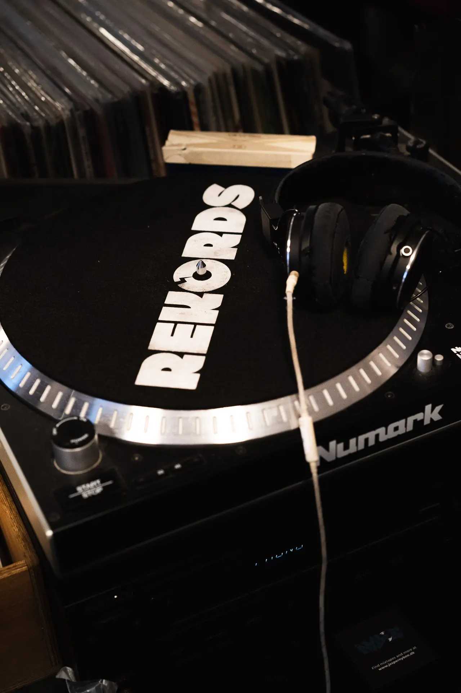
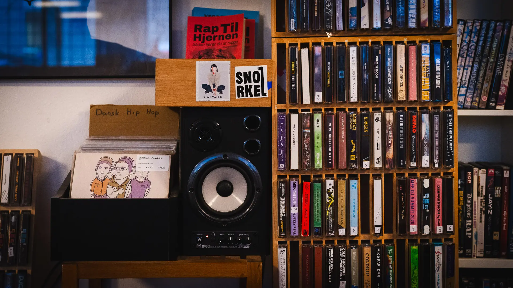

Musik er skabt til sjælen
Peter Nørgaard Hansen lever for musik
I den lille pladeforretning REKORDS, som ligger på Bragesgade 1 på Nørrebro, arbejder Peter hver dag med det han elsker. Peter er med sine egne ord en komplet musiktosse, der altid hører musik, på nær når han sover. Han er medarbejder i butikken REKORDS hvor han hjælpe andre musikelskende ildsjæle med at finde det musik der er for netop dem. Butikken sælger primært hip-hop plader, men har også alt lige fra jazz til figurer af kendte musikere.
Billedgalleri




